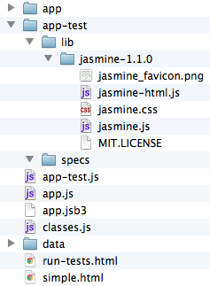

In this tutorial we will take an existing Ext application and introduce the Jasmine assertion library for unit testing. Readers must be familiar with JavaScript, ExtJS 4, the MVC architecture as well as the fundamentals of HTML, CSS, and using resources.
Why Test? There are many reasons to test applications. Tests can verify an application's functionality to eliminate the need to enumerate all the use cases manually. Also, if the application were to be refactored, or updated, the tests could verify that the changes did not introduce new bugs into the system
For this tutorial, use the "simple" example of the MVC in the ExtJS bundle — found under <ext>/examples/app/simple. Copy the simple folder to your workspace or desktop.
Add these folders:
<simple dir>/app-test <simple dir>/app-test/specs
Download and extract the Jasmine standalone library into the app-test folder. Link
Create these files (leave them empty for now, you will fill them in next)
<simple dir>/app-test.js <simple dir>/run-tests.html
Your project should look like this now:
Now that you have the files and folders setup, fill in the test-running environment. Open the run-tests.html and put the following markup into it:
<html> <head> <title id="page-title">Tester</title> <link rel="stylesheet" type="text/css" href="app-test/lib/jasmine-1.1.0/jasmine.css"> <script type="text/javascript" src="extjs/ext-debug.js"></script> <script type="text/javascript" src="app-test/lib/jasmine-1.1.0/jasmine.js"></script> <script type="text/javascript" src="app-test/lib/jasmine-1.1.0/jasmine-html.js"></script> <!-- include specs here --> <!-- test launcher --> <script type="text/javascript" src="app-test.js"></script> </head> <body> </body> </html>
There are a few key things to remember here: the jasmine resources, the ext framework resource and app-test.js. These will need to be included with your tests (this order is important). You will include the specs (jasmine assertion js files) above the app-test.js and below the rest of the files.
Next, open app-test.js and copy this code into it:
Ext.require('Ext.app.Application');
var APPLICATION = null;
Ext.onReady(function() {
APPLICATION = Ext.create('Ext.app.Application', {
name: 'AM',
controllers: [
'Users'
],
launch: function() {
//include the tests in the test.html head
jasmine.getEnv().addReporter(new jasmine.TrivialReporter());
jasmine.getEnv().execute();
}
});
});
The effect of the above code is a global reference to the Application instance and bootstrap for the jasmine assertion library. This is accomplished by directly constructing the Application object and storing the reference when the document is ready, bypassing the Ext.application() method.
Note: this Application definition is not a copy and paste of your regular Application definition in your app.js. This version will only include the controllers, stores, models, etc and when launch is called it will invoke the Jasmine tests.
Now should you have a working test environment.
Under the specs folder (<simple>/app-test/specs) create two empty text files named:
example.spec.js users.spec.js
Then go back to the run-tests.html file and add these two lines under the comment "<!-- include specs here -->"
<!-- include specs here --> <script type="text/javascript" src="app-test/specs/example.spec.js"></script> <script type="text/javascript" src="app-test/specs/users.spec.js"></script>
Note: You may have noticed a pattern in the file names. Although, not required, its nice to indicate what the file is for. (in this case the double extension of *.spec.js)
Start by filling in example.spec.js. Jasmine's specification syntax is very descriptive. Each suite of tests is contained in a describe function, and each test is defined by an "it" function.
Example:
describe("Basic Assumptions", function() {
it("has ExtJS4 loaded", function() {
expect(Ext).toBeDefined();
expect(Ext.getVersion()).toBeTruthy();
expect(Ext.getVersion().major).toEqual(4);
});
it("has loaded AM code",function(){
expect(AM).toBeDefined();
});
});
To pass a test (each "it" block) simply call expect(someValue).toBe<something>()
Next a more complicated example. Testing a store, which is asynchronous, and retrieved from a Controller. (This is where that global application reference will come in handy)
describe("Users", function() {
var store = null, ctlr = null;
beforeEach(function(){
if(!ctlr) ctlr = APPLICATION.getController('Users');
if(!store) store = ctlr.getStore('Users');
expect(store).toBeTruthy();
waitsFor(
function(){ return !store.isLoading(); },
"load never completed",
4000
);
});
it("should have users",function(){
expect(store.getCount()).toBeGreaterThan(1);
});
it("should add and be able to get", function(){
store.add(Ext.create('AM.model.User', {
name: "John Doe",
email: "john.doe@anon.net"
}));
var user = store.findRecord('name', 'John Doe');
expect(user).toBeTruthy();
expect(user.get('email')).toBe('john.doe@anon.net');
});
it("should open the editor window", function(){
var grid = Ext.ComponentQuery.query('userlist')[0];
ctlr.editUser(grid,store.getAt(0));
var edit = Ext.ComponentQuery.query('useredit')[0];
expect(edit).toBeTruthy();
if(edit)edit.destroy();
});
});
Notice the "beforeEach" function (this will be called before each "it"). This function sets up the stage for each test, and this example:
Combining this with PhantomJS allows us to run these tests from the command line or from a cron job. The provided run-jasmine.js in the PhantomJS distribution is all that is needed. (you can tweak it to make the output suit your needs, here is an example tweaked version )
Example command line:
phantomjs run-jasmine.js http://localhost/app/run-tests.html
You will need to run the tests from a web server because XHR's cannot be made from the file:// protocol
About the Author: Jonathan Grimes (FB,Tw,G+) is a software engineer at NextThought, a technology start-up company that is currently building an integrated platform for online education.